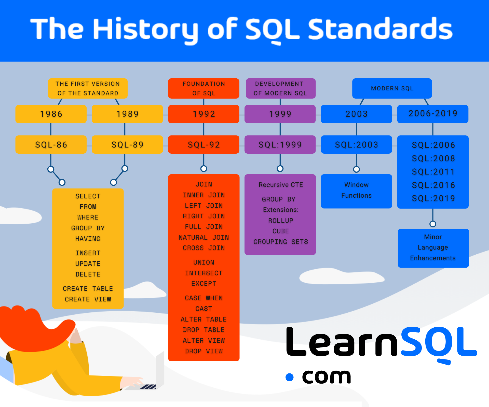

Բարի գալուստ SQL ուսուցման վեբ կայք
Այս կայքը ստեղծվել է որպես հարմար և արդյունավետ ուսուցողական միջավայր՝ SQL լեզուն քայլ առ քայլ սովորելու համար։ Այստեղ դուք կծանոթանաք SQL-ի հիմունքներին, կիրառման ոլորտներին և հիմնական հրամաններին, ինչպես նաև կստուգեք ձեր գիտելիքները ինտերակտիվ թեստերի միջոցով։
Դասընթացը ընդգրկում է թե՛ սկսնակ, թե՛ միջին մակարդակի նյութեր՝ պարզ բացատրություններով, իրական օրինակներով և գործնական առաջադրանքներով։ Մեր նպատակն է SQL-ը դարձնել հասկանալի և կիրառելի տվյալների հետ աշխատելիս։
Սկսեք ուսուցումը այսօր և զարգացրեք ձեր հմտությունները տվյալների աշխարհում վստահորեն աշխատելու համար։
- 📘 Տեսական նյութ՝ հստակ և պարզ բացատրություններով
- ⚙ Գործնական օրինակներ իրական խնդիրների վրա
- 🧠 Ինտերակտիվ թեստեր՝ գիտելիքների ամրապնդման համար

SQL լեզվի ստեղծման պատմություն
SQL (Structured Query Language) ստեղծվել է 1970-ականներին IBM-ում Edgar F. Codd-ի relational model-ի հիման վրա: Այն նախատեսված էր relational database-ների հետ աշխատելու համար՝ հեշտ և արագ տվյալների որոնում, փոփոխություն և կառավարում ապահովելու նպատակով։
1974-ին IBM-ը մշակեց SEQUEL (Structured English Query Language), այնուհետև այն վերանվանվեց SQL, և այսօր այն համարվում է արդյունաբերության ստանդարտ:

SQL և ծրագրավորման լեզուները
SQL-ը հաճախ օգտագործվում է այլ ծրագրավորման լեզուների հետ՝ տվյալների բազաներին մուտք, փոփոխություն և վերլուծություն կատարելու համար:
- Python + SQLAlchemy / psycopg2 / SQLite3
- JavaScript + Node.js + MySQL / PostgreSQL
- Java + JDBC + Oracle / PostgreSQL
- C# + Entity Framework + SQL Server
SQL լեզվի կիրառման ոլորտները
SQL օգտագործվում է շատ ոլորտներում՝ տեղեկատվական համակարգերից մինչև բիզնես վերլուծություն:
Բանկային համակարգեր
Անհրաժեշտ է ֆինանսական տվյալների կառավարում և հաշվետվություններ:
Հիվանդանոցային տվյալների բազաներ
Հիվանդների տեղեկատվության անվտանգ պահպանում և բուժման պատմություն:
Էլեկտրոնային առևտուր
Պատվերների, ապրանքների և հաճախորդների տվյալների կառավարման համար:
.jpeg)
Վերլուծական համակարգեր
Տվյալների վերլուծություն և ռեպորտինգ, BI գործիքներ: